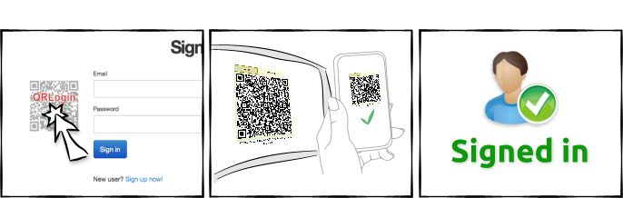

What is QR Login
Features
- No extra app needed - just QR Scanner and standard browser
- Fast and Easy - scan QR code and you are logged in.
- Privacy - different identity for each site
- Security - uses ECDSA to transfer your identity
- Easy integration - OAuth 2.0 protocol
- Open source - Sources are available
How does it work?

Test it now!
Your ID will appear below
Add to your site
Using OAuth 2.0
- Authorization endpoint:
- auth (redirect)
- Token endpoint:
- token (POST)
- Identity endpoint:
- ident (GET, Authorization: Bearer)
- Client identification:
- The client_secret is ignored. The client_id must be equal to redirect_uri's domain (including port if specified). The scope is ignored
- Interface language:
- Include &lang=XX into the Authorization endpoint url. Currently supported languages are: en, cs
More >>
Less <<
- Redirect the user-agent to the "auth" page:
auth?redirect_uri=<url>&state=<state>
- url - url of a page to redirect the user-agent after the autentification.
- state - CSRF token (a random string generated by your site)
- After redirection, read the code and check the state
- Receive the identity - let your site validates the returned token
POST token DATA code=<code>&client_id=<domain>
- code - the string retrieved from the previous step
- domain - whole domain name (including the port, if specified) must match the domain name of the redirect_uri
- The response should look like:
{ "access_token":"xxxxx...xxxx", "expires_in":3600, "identity":"yyyy...yyyy", "token_type":"Bearer" }where idenity is unique idenity string for the autentificated user. - NOTE: This request invalidates the "code". If you need to retrieve the identity later, use the access_token in the following step.
- (optional) Receive the identity with the access_token:
GET ident Autorization: Bearer <access_token>
- access_token - the token retrieved from the previous step
- The response should look like:
{ "identity":"yyyy...yyyy", }where idenity is unique idenity string for the autentificated user.
Sources available at:

About the author

Ondřej Novák
- Facebook: www.facebook.com/ondra.novacisko.cz
- Twitter: @novacisko
- GitHub: ondra-novak
- E-mail: nov.ondrej@gmail.com